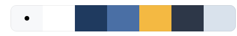
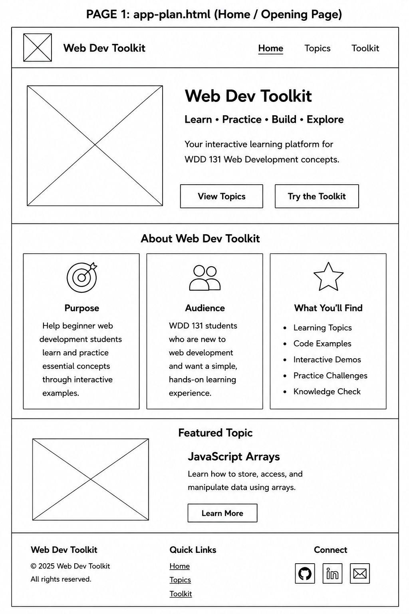
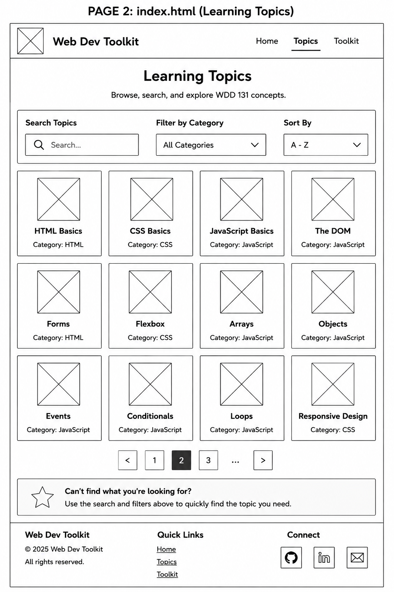

Folder Structure and Files
- app-plan.html — Site plan document
- index.html — Home page
- topic.html — Learning Topics page
- styles/app-plan.css — Site plan styling
- styles/styles.css — Main website styling
- scripts/app.js — JavaScript functionality
- images/ — Logo, color palette, and wireframes
Overview
Purpose
The purpose of Web Dev Toolkit is to help beginner web development students review and practice the major skills taught in WDD 131. The site will organize HTML, CSS, JavaScript, accessibility, responsive design, forms, arrays, objects, sorting, and filtering into one interactive learning platform.
Audience
The audience for this website is beginner web development students who are learning how to build valid, responsive, accessible, and interactive websites. The site is designed for students who need simple explanations, visual examples, and practice tools to help them understand class concepts.
Dynamic Elements
JavaScript will be used to create interactive learning features throughout the site. The Learning Topics page will display topic cards from an array of objects. Each object will include a topic title, category, difficulty level, description, and image.
Users will be able to search for topics, filter topics by category, and sort topics alphabetically or by difficulty level. JavaScript will also be used for DOM interaction, including updating the displayed cards, showing a “No Topics Found” message, opening and closing navigation, and responding to user events.
Functions will organize the JavaScript code, conditionals will determine which topics should be displayed, and array methods such as forEach(), filter(), and sort() will be used to process and display the topic information.
Website Pages
Page 1: index.html — Home Page
The Home page will introduce Web Dev Toolkit, explain what the site is for, and guide users to the Learning Topics page. The page will include the centered Web Dev Toolkit logo, introductory content, and a View Topics button.
Page 2: topic.html — Learning Topics Page
The Learning Topics page will include searchable, filterable, and sortable WDD 131 topic cards. This page will demonstrate arrays, objects, DOM interaction, events, filtering, sorting, and responsive card layouts.
Branding
Website Logo
The Web Dev Toolkit logo uses a web-development style with code symbols and a professional technology design. It represents learning, practicing, building, and exploring web development skills. The logo image will be used by itself without additional text beside it.
Style Guide
Color Palette

Palette URL: https://coolors.co/f7f8fa-ffffff-1f3a5f-4a6fa5-f4b942-2d3748-d9e2ec
- Primary: Deep Navy — #1F3A5F
- Secondary: Steel Blue — #4A6FA5
- Accent 1: Warm Gold — #F4B942
- Accent 2: Soft Light Gray — #D9E2EC
Fonts
Heading Font: Georgia, serif
Body Font: Arial, sans-serif
Pseudocode for Your Project
When the Website Loads
- Load the page.
- If the Learning Topics page is loaded, load the array of web development topics.
- Create topic cards from the array of objects.
- Display all topic cards on the Learning Topics page.
Navigation
- Wait for the user to click a navigation link.
- If Home is selected, display the Home page.
- If Topics is selected, display the Learning Topics page.
- Highlight the active navigation item.
View Topics Button
- Wait for the user to click the View Topics button.
- Open the Learning Topics page.
Search, Filter, and Sort
- Wait for the user to type in the search box or choose a dropdown option.
- Use filter() to display matching topics.
- Use conditionals to check the selected category.
- Use sort() to organize topics alphabetically or by difficulty.
- Redisplay the topic cards.
- If no topics match, display a “No Topics Found” message.
Topic Cards
- Create an array of topic objects.
- Store the title, category, difficulty, description, and image in each object.
- Select the topic card container from the DOM.
- Use forEach() to loop through the topic data.
- Create and display a card for each topic.
Accessibility
- Display descriptive alt text for all images.
- Provide labels for all form controls.
- Allow keyboard navigation.
- Maintain sufficient color contrast throughout the website.
- Use visible focus indicators for interactive elements.
Wireframes
Page 1: index.html — Home Page
The Home page will introduce Web Dev Toolkit and guide users to the Learning Topics page. The logo will be centered, the main action will be View Topics, and Quick Links will not be included in the footer.

Page 2: topic.html — Learning Topics Page
The Learning Topics page will include a search bar, category filter, sort option, topic cards, and footer. Quick Links will not be included in the footer.
